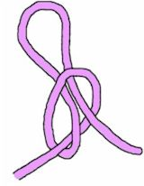
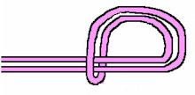
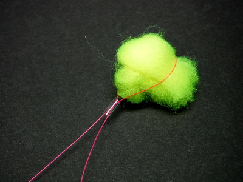
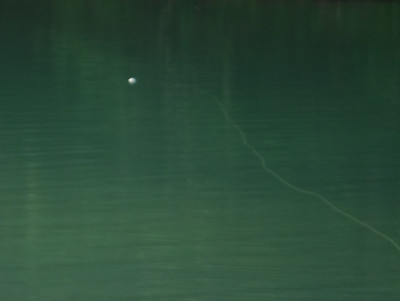
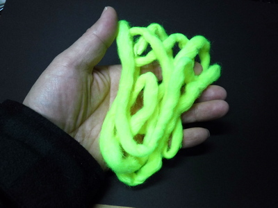

私のお気に入り
自作の道具たち ヤーン・インジケーター
ことの始まり
1997年、初めてのニュージーランド釣行で、４日目と５日目をガイドしてくれたブリント・トロレイさんが大川の弛みに定位している大きなブラウンを見つけた。しきりに魚体を左右に揺らし、流下するニンフを捕食しているようだった。ブリントさんは、小さなフェザントテール・ニンフを選んでくれ、ポケットから白いウールのひとつまみを取り出して、ごく小さくちぎってからティペットにインジケーターとして結んでくれた。
フェザントテールの効き目も見事だったが、小さな白いインジケーターの浮力と見やすさには驚かされた。以来、真似をして白いエッグヤーンで自作している。
フライフィッシング用のインジケーターは、フライパターンと同じくらいの種類があるのでは？と思うくらい各社から実に様々なタイプが販売されいるが、今のところはこれが、”シンプル・イズ・ベスト” であり、気に入って使っている。
今年、2019年の１月に大量に作成してブリントさんに送ったところ、「これは良く浮くなぁ！」と喜んでもらえた。嬉しかった。
材料と作成方法（というほどのものでは無いです....）
- 白色のエッグ・ヤーン １パック
色は後述しますが、用途によって変更可能です。
エッグ・ヤーンについては、各社から様々な名称で発売されていますが、僕の使った限りでは、The Bug Shopというメーカーの15' Glo Bugs Yarn という製品が良かったです。色揃えも豊富ですし、ヤーンの繊維が細かく裂けること無く、防水加工が楽です。長さ 150cm、直径約8mm のヤーンが３本入って、650円でした。今日、別メーカーの製品を袋から取り出してほどいてみたら、カニかまぼこのように細く裂けて使いづらかったです。
The Bug Shop 15' Glo Bugs Yarn
画像は amazon.com より引用
メーカーウェブサイトから通販ができるようです。
１袋、$3.10 でした。（2020/03/01現在） - モンベルのSRスプレー
３Mスコッチガードなど、他の防水スプレーも使えると思いますが、個人的にはSRスプレーが一番効くような気がします。（笑）
 モンベル社：S.R.スプレー330mL炊事用手袋を着用してから、防水スプレーを、ヤーンがびっしょり濡れるまで噴射します。その後、揉み合わせてヤーンに液をまんべんなく浸透させてから、よく乾燥させます。吸引事故防止のため、噴射作業、乾燥作業ともに屋外で行って下さい。
モンベル社：S.R.スプレー330mL炊事用手袋を着用してから、防水スプレーを、ヤーンがびっしょり濡れるまで噴射します。その後、揉み合わせてヤーンに液をまんべんなく浸透させてから、よく乾燥させます。吸引事故防止のため、噴射作業、乾燥作業ともに屋外で行って下さい。
画像はメーカーサイトより引用 - お好みの長さにカット
釣りに出かける前に、数パターンの長さにカットして、適当なケース、小袋に入れて携帯します。
ケースの仕切りに長さを書いておくと分かりやすいです。
現場でカットするなら切れ味の良い小型ハサミが必要になります。ティペットカッターでは切るのに苦労します。

完成したヤーン・インジケーター
長所と短所
- 非常に安価に、簡単に作ることができる
ヤーン一袋で、百個くらい作成できるのでは？ - 防水スプレーは、雨具用と共用可能
再利用が可能。水気を含んで沈むようになっても、絞ったり、乾燥させれば再度使えます。 - 大きさを自由に作ることができる
現場での調節も容易 - 視認性に優れる
- 浮力に優れる
- タナの調整が容易
下記ノットを参考にして、ティペットに結びつけて下さい。位置の調節が容易に出来ます。

A．コモン・インジケーター・ノット
画像は Fly Shop New Zealand より引用

B．ハーフヒッチ・インジケーター・ノット
画像は Fly Shop New Zealand より引用
C．カラミ止パイプを用いた固定方法普通の人ならば、上記 A,B どちらかの方法で上手くティペットにヤーンを結わえ付け、解いて移動させられるはずなのですが、僕がやるとどうしてもノットが緩みません。そこで、東邦産業から出ているカラミ止パイプ（内径1.5mm）を買って、長さ7mm ほどにカットしてティペットを通して輪っかを作り、ヤーンを包んで絞めたらしっかり固定できて、楽に解けました。 - アタリに敏感に反応する
- キャスト時の空気抵抗が少ない
重量も軽いので、キャスト時にリーダーやティペットに絡まりにくいです。 - 圧縮してケースに詰めれば大量に携帯できる

水面高く浮いて、波に揉まれても見やすい
使い方
- ヤーンをカットする大きさ
結ぶニンフの重さに応じて調節します。1.5cm ～ 4.0cmほどで数パターン作っておくと便利。二つ折りないしは四つ折にしてティペットに結びます。
なるべくコンパクトにまとまった形状にして結び、空気抵抗を減らします。
止水の管理釣り場であれば、色違いの小さめをティペットの２ヶ所に付けるとアタリが明確に出ます。渓流でも、ごく小さめにして２ヶ所に付けると、ニンフ側、リーダー側の区別が付きやすくなり、流れている位置が把握しやすいです。 - ドライフライ用のフロータントを塗る
さらに浮力が増して長持ちします。濡れたら一度手にとって水分を絞るか、吸水パッチで押さえると良いでしょう。 - ヤーンの色の使い分け
お好みの色のヤーンが使えます。日本の渓流や管理釣り場においては、白、オレンジ、イエロー、黒など、視認性が良ければ何でもOK！

蛍光イエローのインジケーターオレンジ＋イエロー などのツートーンカラーでの使用も可。夕暮れ時の逆光時には黒などのダークカラーが良く見えます。 - ニュージーランド
ブラウントラウトを相手にするのであれば、色は白で、ごく小さめにします！ レインボートラウトは、さほどスプーキーではないので、オレンジでも可だと思われます。シビアな状況ならば白をお勧めします - タウポ地方、トンガリロ・リバー等での遡上鱒の釣り
大きさはピンポン玉程度と特大にして、フライラインの先端か、ラインのすぐ先のモノフィラ・ティペットの根元に付けます。
2019/12/04
私のお気に入り 目次へ
サイトマップ
ホームへ
お問い合わせ